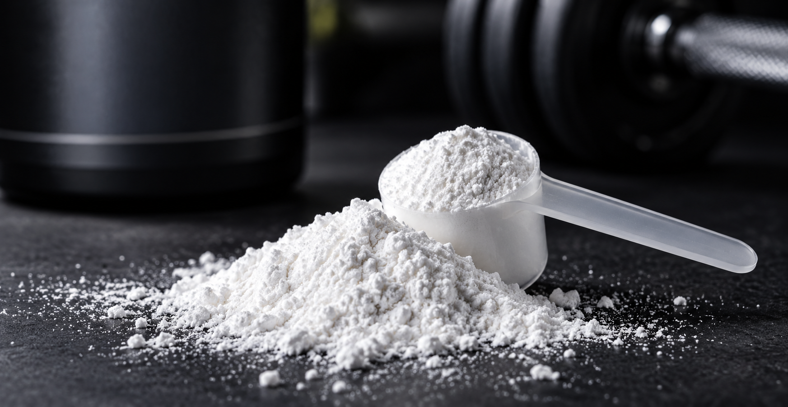

Los beneficios de la creatina
La creatina, ácido α-metil guanido-acético, es un ácido orgánico nitrogenado que se encuentra en los músculos y células nerviosas de algunos organismos vivos. Se puede obtener tanto de manera natural como de manera artificial como suplemento. Se sintetiza de forma natural en el hígado, el páncreas y en los riñones a partir de los aminoácidos arginina, glicina y metionina a razón de un gramo de creatina por día.